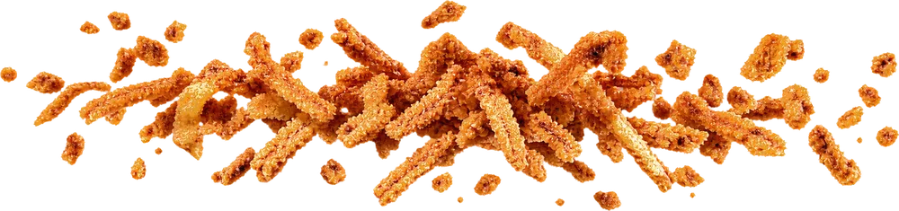
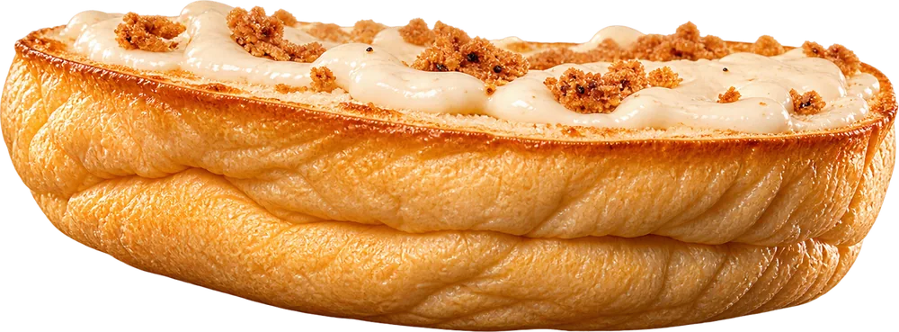
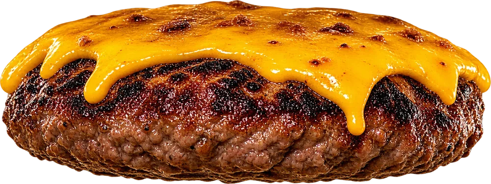
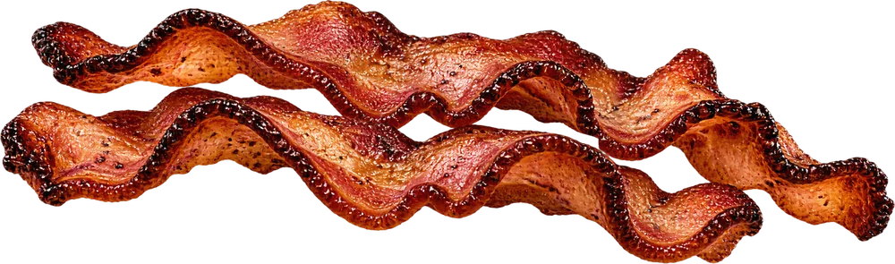
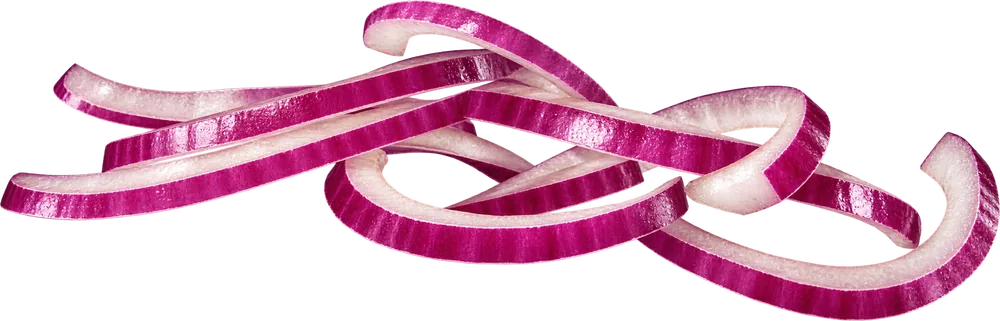
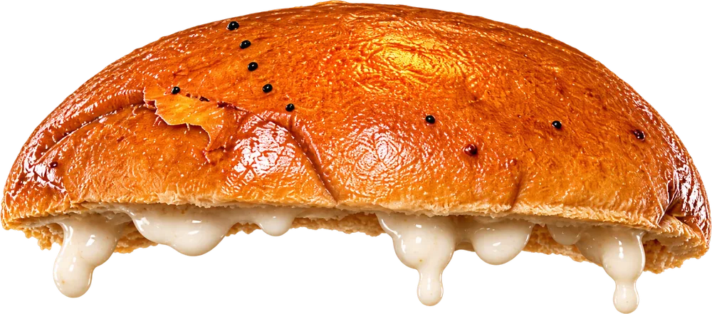

Bar · Restaurante · Logroño
La Soga urban food



Carne con quesoCarne
BaconBacon
Cebolla crujienteCebolla
crujiente
crujiente

Pan briocheBriocheNo es solo una burger
El secreto está en cada capa
¿Te atreves a probarla?